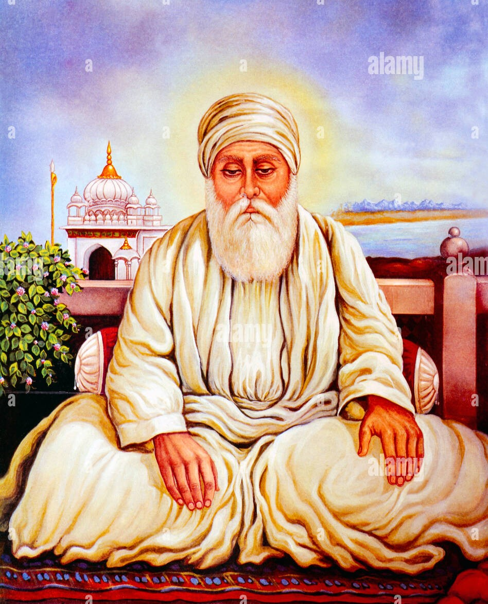
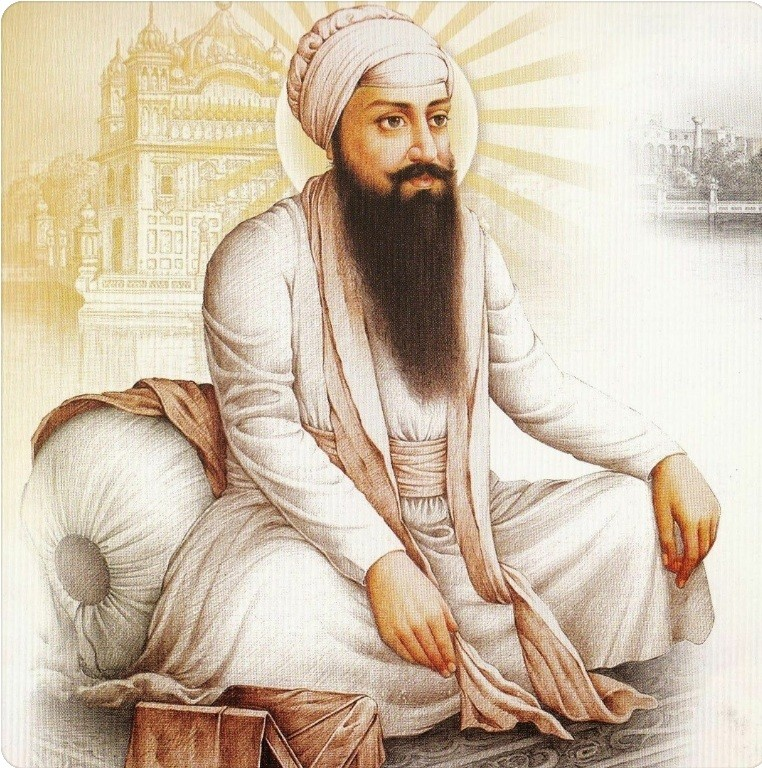
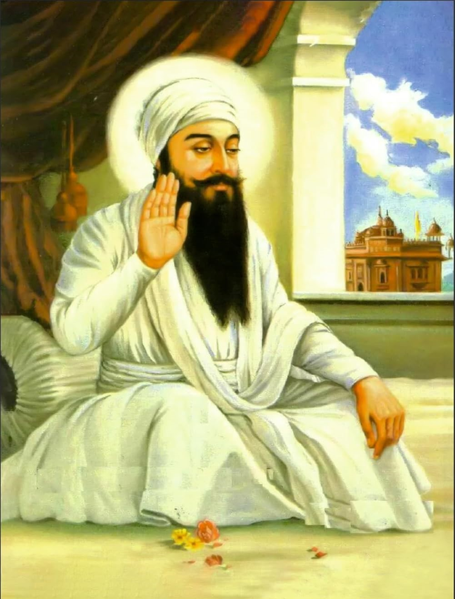
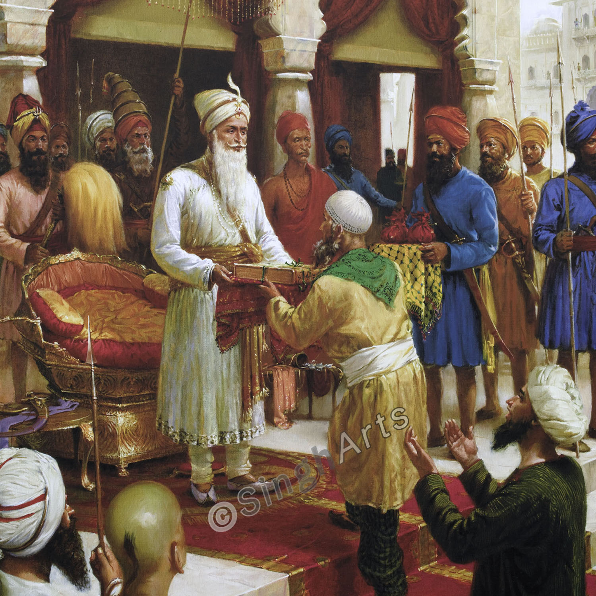

Guruship passes: Guru Ram Das Ji and Guru Arjan Dev Ji
Joti Jot of Guru Amar Das Ji and Gurgaddi of Guru Ram Das Ji (1574); Joti Jot of Guru Ram Das Ji and Gurgaddi of Guru Arjan Dev Ji (1581).
16 September (1 Assu in the Nanakshahi calendar) brings together four moments of Sikh history, from 1574 to 1843. The main event of the day is from 1574: Guruship passes: Guru Ram Das Ji and Guru Arjan Dev Ji. Together they span three periods, from The early Gurus (1469–1605) to Decline of the Lahore Darbar and annexation (1840–1849). People, places and movements connected with this day include Guru Amar Das Ji, Guru Ram Das Ji, Guru Arjan Dev Ji and Baba Buddha Ji.

Also on this day
- 1631Baba Buddha Ji passed away
- 1842A friendship treaty (the Treaty of Chushul) was signed between the Khalsa Darbar and the Tibetan authorities at Lhasa This treaty was signed during Maharaja Sher Singh’s reign.
- 1843Dalip Singh was enthroned as Maharaja of Punjab This came only after serious internal fighting over the succession that followed the death of Maharaja Ranjit Singh on June 27, 1839.
Historical background
The early Gurus (1469–1605)
Guru Nanak Dev Ji (1469–1539) founded the Sikh faith, travelled widely and settled the first Sikh community at Kartarpur. His successors built its institutions: Guru Angad Dev Ji standardised the Gurmukhi script, Guru Amar Das Ji organised the sangat into manjis and made langar central, Guru Ram Das Ji founded the town of Ramdaspur (Amritsar), and Guru Arjan Dev Ji built Sri Harmandir Sahib and compiled the Adi Granth in 1604.
On this day in this period: 1574 Guruship passes: Guru Ram Das Ji and Guru Arjan Dev Ji.
Miri-Piri and the middle Gurus (1606–1674)
After the martyrdom of Guru Arjan Dev Ji in 1606, Guru Hargobind Sahib Ji wore two swords of miri and piri (temporal and spiritual authority), established the Akal Takht and fought several engagements with Mughal forces. The seventh and eighth Gurus, Guru Har Rai Ji and Guru Har Krishan Ji, led the community from Kiratpur and Delhi, and Guru Tegh Bahadur Ji founded Anandpur (Chak Nanaki) in 1665.
On this day in this period: 1631 Baba Buddha Ji passed away.
Decline of the Lahore Darbar and annexation (1840–1849)
After Ranjit Singh's death in 1839, the Lahore Darbar was torn by the murders of three successive rulers and court intrigue under the Dogra ministers. The First Anglo-Sikh War (1845–46) and the Second (1848–49) ended with the British annexation of Punjab in 1849 and the exile of the young Maharaja Duleep Singh.
On this day in this period: 1842 A friendship treaty (the Treaty of Chushul) was signed between the Khalsa Darbar and the…; 1843 Dalip Singh was enthroned as Maharaja of Punjab.
People and places of this day
Guru Amar Das Ji
The third Guru (1479–1574), who made Goindwal a centre of the faith with its baoli, organised the sangat into 22 manjis, insisted that all visitors eat together in langar and spoke against purdah and sati.
Read more → · Mentioned on 10 other days of the year

Guru Ram Das Ji
The fourth Guru (1534–1581), formerly Bhai Jetha and husband of Bibi Bhani. He founded the town of Ramdaspur, later Amritsar, began excavating its sacred pool and composed the Lavan used in the Sikh wedding ceremony.
Read more → · Mentioned on 9 other days of the year

Guru Arjan Dev Ji
The fifth Guru (1563–1606), who built Sri Harmandir Sahib, founded Tarn Taran and Kartarpur (Jalandhar), and compiled the Adi Granth in 1604. He was tortured to death in Lahore in 1606, the first Sikh martyr Guru.
Read more → · Mentioned on 9 other days of the year

Baba Buddha Ji
A disciple of Guru Nanak Dev Ji who lived through the time of six Gurus (c. 1506–1631). He performed the tilak ceremony for the second to sixth Gurus and was the first granthi of Sri Harmandir Sahib.
Read more → · Mentioned on 9 other days of the year
The Lahore Darbar after Ranjit Singh
The court at Lahore after 1839, when Kharak Singh, Nau Nihal Singh and Sher Singh ruled in quick succession and the Dogra ministers Dhian Singh, Hira Singh and Gulab Singh competed for power. Under Maharani Jind Kaur the Khalsa army fought the British in two Anglo-Sikh wars, which ended in annexation in 1849.
Mentioned on 42 other days of the year

Maharaja Ranjit Singh
The founder of the Sikh Empire (1780–1839). He took Lahore in 1799, was proclaimed Maharaja in 1801, unified the misls, built a modern army, and covered Sri Harmandir Sahib in gold, giving it the name Golden Temple.
Read more → · Mentioned on 32 other days of the year
Maharaja Duleep Singh
The last Maharaja of the Sikh Empire (1838–1893), youngest son of Ranjit Singh. Deposed at the age of ten when Punjab was annexed in 1849, he was taken to England, later tried to return to India and reclaim his heritage, and died in Paris.
Mentioned on 18 other days of the year
Related days in Sikh history
Sources and further reading
- Gurpurab date: the Nanakshahi calendar as observed by the Sikh Panth.
- Teja Singh and Ganda Singh, A Short History of the Sikhs, vol. 1 (1469–1765), Orient Longmans, 1950.
- Fauja Singh and others, Maharaja Ranjit Singh: Politics, Society and Economy, Punjabi University, 1984.
- Harbans Singh (ed.), The Encyclopaedia of Sikhism, 4 vols, Punjabi University, Patiala, 1992–1998.
- Khushwant Singh, A History of the Sikhs, 2 vols, Oxford University Press, 1963–1966 (2nd ed. 2004).
- J. S. Grewal, The Sikhs of the Punjab, The New Cambridge History of India, Cambridge University Press, 1990 (rev. 1998).
- Kahn Singh Nabha, Gur Shabad Ratnakar Mahan Kosh, 1930.
Background sections are written by SikhsInIndia.com from the works listed. Dates in Sikh history sometimes differ between sources and between the Nanakshahi and older Bikrami calendars. To suggest a correction, write to sikhsinindia@gmail.com.